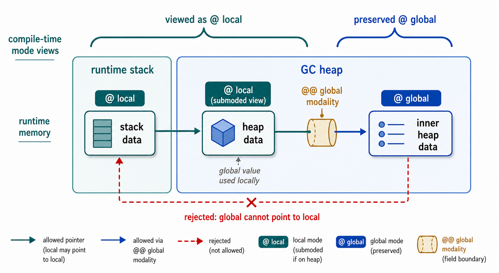

OCaml default
Safe, high-level, uniform values, GC-managed allocation.
OxCaml Basics
A three-hour technical course for OCaml engineers learning OxCaml's performance-oriented type system.

Safe, high-level, uniform values, GC-managed allocation.
Explicit compiler-checked control when the default costs too much.
Checked low-level intent, not unsafe faster OCaml.
Overlapping mutable access when at least one access writes.
A local value escapes the region that owns it.
Code expects one value word, but the caller has raw or product layout.
In all three cases, OxCaml turns a runtime failure mode into a compile-time error.
Module 01
Parallel mutation can race.
Callback bodies appear to be checked.
Direct field access requires a mode.
Parallel closures weaken captured values.
Calls check parameter-mode requirements.
Function values carry portability.
Read each annotation where it appears.
Fork and spawn are not magic names.
Use modes to design parallel helpers.
let #(left, right) =
Parallel.fork_join2 parallel
(fun _parallel -> left_work ())
(fun _parallel -> right_work ())
in
combine left rightChildren may overlap; parent resumes after both finish.
let _ = Concurrent.spawn
(fun () -> worker ())
() in
parent_side_effect ()Spawned work may overlap later parent effects.
let r = ref 0
Parallel.fork_join2 parallel
(fun _ -> incr r)
(fun _ -> incr r)Both callbacks may touch the same mutable cell at the same time.
| read | write | |
|---|---|---|
| read | safe | race |
| write | race | race |
Two reads are fine. Anything overlapping a write needs ownership or synchronization.
let x = { hits = 0 }
Parallel.fork_join2 parallel
(fun _ -> x.hits <- x.hits + 1)
(fun _ -> x.hits <- x.hits + 1)The callback body directly writes state captured from outside.
let _ = Concurrent.spawn
(fun () ->
let x = { hits = 0 } in
x.hits <- x.hits + 1)
() in
()Fresh state created inside the callback is owned by that callback body.
Useful simplification: the compiler appears to check callback bodies. It is not just scanning syntax.
Each call owns its buffer. Parallel calls mutate separate scratch state.
Browser playground note: the API names are real, but JavaScript runs the scheduler and spawn shim sequentially.

x @ uncontendedx @ sharedx @ contendedContention answers: at this use site, what access do I have to mutable components?
x.idworks even when x is contended
x.hitsneeds x at least shared
x.hits <- x.hits + 1needs x @ uncontended
A direct field operation succeeds or fails according to the available contention mode.
structured parallel callback
b @ uncontended→b @ shareda @ shared→a @ sharedc @ contended→c @ contendedMutable reads can survive; mutable writes cannot.
detached parallel callback
b @ uncontended→b @ contendeda @ shared→a @ contendedc @ contended→c @ contendedCaptured mutable reads and writes are both unavailable.
The callback boundary controls how captured values are seen inside the body.
x in three contextsx @ uncontended
x.id okx.hits okx.hits <- ... okx @ shared
x.id okx.hits okx.hits <- ... rejectedx @ contended
x.id okx.hits rejectedx.hits <- ... rejectedA helper’s type records what mode each explicit argument requires.
The compiler does not need to inline the helper body.
In inferred interfaces, plain t means the default requirement: t @ uncontended.
Inside fork/join, x may be only shared; bump_hits requires uncontended.
xSuppose x is captured from outside the function being passed. Which helper calls are allowed?
type t = { id : int; mutable hits : int }
let get_id (x @ contended) = x.id
let get_hits (x @ shared) = x.hits
let bump_hits (x @ uncontended) =
x.hits <- x.hits + 1| Call | List.iter | fork_join2 | spawn |
|---|---|---|---|
get_id x | |||
get_hits x | |||
bump_hits x |
portableshareablenonportablePortability answers: can this value be used in this parallel context? These are the names for the callback-boundary behaviors from Level 3.
write_x 1 has no explicit x argument.
The mutable access is hidden in the function value write_x.
So the call checks whether write_x is portable enough.
Moving buf to the top level makes bits_to_string_shared carry hidden mutable state.
Failure chain: captured buf → nonportable function value → spawn requires portable callback.

Where can each helper be used?
type t = { id : int; mutable hits : int }
let x = { id = 1; hits = 0 }
let id_x () = x.id
let read_x () = x.hits
let write_x v = x.hits <- v| Helper | ordinary | fork/join | spawn |
|---|---|---|---|
id_x | |||
read_x | |||
write_x |
let bump_hits (x @ uncontended) =
x.hits <- x.hits + 1
fun _parallel -> bump_hits xIs x available at the parameter mode?
let write_x v =
x.hits <- v
fun _parallel -> write_x 1Is write_x itself shareable or portable enough?
t @ sharedthis value position requires shared contention
(unit -> unit) @ portablethis function value must be portable
('a @ shared -> 'b) @ shareablecallback value is shareable; its argument is provided as shared
((unit -> unit) @ portable -> unit) @ shareableouter function is shareable; its argument must be a portable function
Do not split “values vs functions.” Function values are values; read the annotation at its type position.
val fork_join2 :
Parallel.t @ local ->
(Parallel.t @ local -> 'a) @ shareable ->
(Parallel.t @ local -> 'b) @ shareable ->
#('a * 'b)
val spawn : (* schematic *)
(unit -> unit) @ portable ->
unit -> unitThe callback argument types trigger the earlier rules. The real spawn API also tracks once/unique/unyielding details and returns a spawn_result.
The callback mode propagates through higher-order helper APIs.
Predict the inferred promise on f: both fork/join callbacks must be allowed to call it.
val parallel_map :
Parallel.t @ local ->
('a @ shared -> 'b) @ shareable ->
'a list @ shareable shared ->
'b list @@ statelesscallback: shareable value; receives each element as shared
input list: may flow into fork/join work; read-only access
implementation: inferred stateless, which implies portable
0. Parallel mutation can race.
1. Surface model: callback bodies appear to be checked.
2. Direct reads/writes require contention modes.
3. Shareable and portable closure boundaries weaken captured values.
4. Function calls check explicit argument-mode requirements.
5. Function values carry portability, catching hidden captures.
6-8. Modes are positional; ordinary API types create reusable parallel contracts.
Module 02
OCaml allocation is usually cheap. Some hot or low-latency paths still need explicit control over whether temporary values go on the GC heap or the allocation stack.
Some n is ordinary style, but the present case allocates.
Compare ordinary heap allocation, stack allocation, rejected escape, and exclave_ returns across the call stack, allocation stack, and GC heap.
sum returnsint list @ localexclave_sum borrows; no local blockssumbad region markbad regionreclaimed on returnexclave_subsequent allocation happens in caller regionmake_heap_listmake_heap_list returns.stack_ forces the following allocation onto the allocation stack.
The consumer matters: sum accepts int list @ local.
stack_ is strict: it does not silently move an escaping allocation back to the heap.
Expected outcome: rejected escape.
The restriction is on the function body, not on callers.
Callers may pass heap values or stack values.
A parameter of type scratch -> 'a asks for a global scratch argument.
That is necessary because the callback type would allow the function to retain its argument.
Expected outcome: rejected at f s; this API did not promise borrowing.
A callback can use temporary state during the call, but cannot retain it.
The local parameter is the API contract.
If a closure captures a local value, the closure itself is local.
An ordinary unit -> unit slot is too global for that closure.
let call_now_bad (f : unit -> unit) =
f ()Immediate-call APIs should accept local callback values.
exclave_ exits the current region and evaluates the result expression in the parent region.
The result may be local to the caller.

Must be viewed as @ local.
Can be viewed as @ local by submoding.
@@ globalPreserves the global view across a field boundary.
escape xs stores the list in a global ref, so xs is usable globally.
sum xs then uses the same value through the more restrictive @ local view.
The inner list starts global: the first escape inner type-checks.
After matching through outer : int list list @ local, the extracted inner is only local.
Modes.Global.t has a field with modality @@ global.
The outer list can be local while inner.global is still known to be global.
let id_local_int (x : int @ local) : int =
xNo lifetime-sensitive heap block.
let id_local_string
(x : string @ local) : string @ global =
xRejected: the string may point into a local region.
local/global controls lifetime and escape.
stack_ forces the next allocation onto the allocation stack.
exclave_ builds a local result in the caller region.
Module 03
int, char, bool, unit, etc. use this shape.
Records, tuples, arrays, etc. use this shape.
The header describes which fields are values vs. raw data. The GC does not scan raw data.
let plain_value_integer = 5
let plain_value_tuple = (1, 2, 3)
type quote =
{ symbol : string
; price : int
; mutable size : int
}The runtime, GC, and libraries all agree on one value shape. Polymorphic functions are only compiled once.
Represented as immediates.
Allocate heap blocks; the header tag identifies the constructor.
Recursive data is a graph of values: immediates or pointers to other heap blocks.
let shared = "shared"
let t = (shared, shared, "other")Two fields can point at the same heap object.
let boxed_numeric_values =
(3.5, 456L)tuple block, boxed float, boxed int64
let ordinary_option_values =
(None, Some "found")Some constructor requires a block
(1, "one")one heap block for grouping
#(1, "one")tuple block removed; string heap object remains
type boxed_point =
{ x : float; y : float; label : string }
type sample =
{ point : boxed_point
; count : int
}mixed ordinary record: float fields are boxed value fields
type unboxed_point =
#{ x : float#; y : float#; label : string }
type sample =
{ point : unboxed_point
; count : int
}raw float fields and the label pointer are stored inline
or_null removes option wrapper allocationNone
→
Null
missing value
Some payload
→
This payload
same representation as the payload
or_null answerNull replaces None.
This x replaces Some x without adding a wrapper block around x.
or_null cannot be nestedNull is represented by the null machine word.
If string or_null or_null were allowed, the same null word would need two meanings: the outer missing value and the inner missing value.
The payload of or_null must be non-null. A value that is already or_null is maybe-null.
If an error says a type parameter expects value, the API expects ordinary one-word OCaml values.
Edit the kind bound from value to float64.
module type Point = sig
type t
val make : float# -> float# -> t
endplain abstract type defaults to value, losing the product layout
module type Point = sig
type t : float64 & float64
val make : float# -> float# -> t
endrepresentation remains abstract; kind is public
val map_value
: ('a : value) ('b : value)
. ('a -> 'b)
-> 'a list
-> 'b listtype ('a : value & value) product_list = ...
val map_product_list
: ('a : value & value) ('b : value & value)
. ('a -> 'b)
-> 'a product_list
-> 'b product_listlet%template[@kind k = (value, value & value)] id
: ('a : k). 'a -> 'a =
fun x -> xOne source pattern can generate multiple definitions with different calling conventions.
Use contention and portability requirements.
Use local, stack_, and exclave_.
Use layouts, unboxed types, and or_null.
All three make performance-sensitive intent explicit and checked.